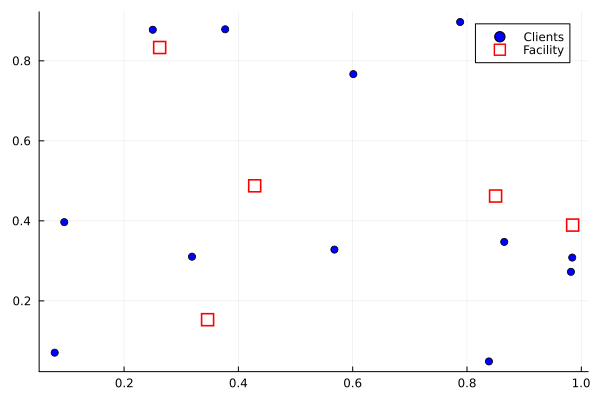
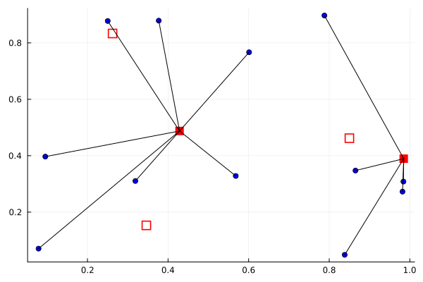
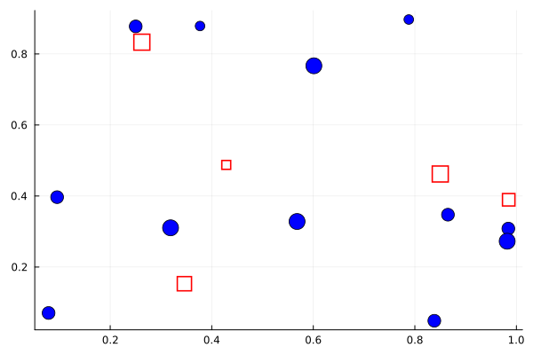
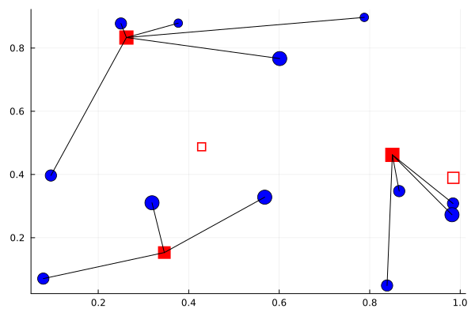

The facility location problem
This tutorial was generated using Literate.jl. Download the source as a .jl file.
This tutorial was originally contributed by Mathieu Tanneau and Alexis Montoison.
This tutorial formulates and solves both the uncapacitated and capacitated facility location problems using binary integer programming in JuMP. It also demonstrates how to visualise the problem data and solution using Plots.
Learning intentions:
- Formulate a binary integer program for facility location, coupling open/close decisions with client-assignment decisions through linking constraints
- Extend the uncapacitated model with demand and capacity data to obtain the capacitated variant, and understand how the coupling constraints change
- Visualise problem data and the optimal solution to verify that the model behaves as expected
Required packages
This tutorial uses the following packages:
using JuMPimport HiGHSimport LinearAlgebraimport Plotsimport RandomUncapacitated facility location
Problem description
We are given
- A set $M=\{1, \dots, m\}$ of clients
- A set $N=\{ 1, \dots, n\}$ of sites where a facility can be built
Decision variables Decision variables are split into two categories:
- Binary variable $y_{j}$ indicates whether facility $j$ is built or not
- Binary variable $x_{i, j}$ indicates whether client $i$ is assigned to facility $j$
Objective The objective is to minimize the total cost of serving all clients. This costs breaks down into two components:
- Fixed cost of building a facility.
In this example, this cost is $f_{j} = 1, \ \forall j$.
- Cost of serving clients from the assigned facility.
In this example, the cost $c_{i, j}$ of serving client $i$ from facility $j$ is the Euclidean distance between the two.
Constraints
- Each customer must be served by exactly one facility
- A facility cannot serve any client unless it is open
MILP formulation
The problem can be formulated as the following MILP:
\[\begin{aligned} \min_{x, y} \ \ \ & \sum_{i, j} c_{i, j} x_{i, j} + \sum_{j} f_{j} y_{j} \\ s.t. & \sum_{j} x_{i, j} = 1, && \forall i \in M \\ & x_{i, j} \leq y_{j}, && \forall i \in M, j \in N \\ & x_{i, j}, y_{j} \in \{0, 1\}, && \forall i \in M, j \in N \end{aligned}\]
where the first set of constraints ensures that each client is served exactly once, and the second set of constraints ensures that no client is served from an unopened facility.
Problem data
To ensure reproducibility, we set the random number seed:
Random.seed!(314)Random.TaskLocalRNG()Here's the data we need:
# Number of clientsm = 12# Number of facility locationsn = 5# Clients' locationsx_c, y_c = rand(m), rand(m)# Facilities' potential locationsx_f, y_f = rand(n), rand(n)# Fixed costsf = ones(n);# Distancec = zeros(m, n)for i in 1:m for j in 1:n c[i, j] = LinearAlgebra.norm([x_c[i] - x_f[j], y_c[i] - y_f[j]], 2) endendDisplay the data
Plots.scatter( x_c, y_c; label = "Clients", markershape = :circle, markercolor = :blue,)Plots.scatter!( x_f, y_f; label = "Facility", markershape = :square, markercolor = :white, markersize = 6, markerstrokecolor = :red, markerstrokewidth = 2,)
JuMP implementation
Create a JuMP model
model = Model(HiGHS.Optimizer)set_silent(model)@variable(model, y[1:n], Bin);@variable(model, x[1:m, 1:n], Bin);# Each client is served exactly once@constraint(model, client_service[i in 1:m], sum(x[i, j] for j in 1:n) == 1);# A facility must be open to serve a client@constraint(model, open_facility[i in 1:m, j in 1:n], x[i, j] <= y[j]);@objective(model, Min, f' * y + sum(c .* x));Solve the uncapacitated facility location problem with HiGHS
optimize!(model)assert_is_solved_and_feasible(model)println("Optimal value: ", objective_value(model))Optimal value: 5.7018394545724185Visualizing the solution
The threshold 1e-5 ensure that edges between clients and facilities are drawn when x[i, j] ≈ 1.
x_is_selected = isapprox.(value.(x), 1; atol = 1e-5);y_is_selected = isapprox.(value.(y), 1; atol = 1e-5);p = Plots.scatter( x_c, y_c; markershape = :circle, markercolor = :blue, label = nothing,)Plots.scatter!( x_f, y_f; markershape = :square, markercolor = [(y_is_selected[j] ? :red : :white) for j in 1:n], markersize = 6, markerstrokecolor = :red, markerstrokewidth = 2, label = nothing,)for i in 1:m, j in 1:n if x_is_selected[i, j] Plots.plot!( [x_c[i], x_f[j]], [y_c[i], y_f[j]]; color = :black, label = nothing, ) endendp
Capacitated facility location
Problem formulation
The capacitated variant introduces a capacity constraint on each facility, that is, clients have a certain level of demand to be served, while each facility only has finite capacity which cannot be exceeded.
Specifically,
- The demand of client $i$ is denoted by $a_{i} \geq 0$
- The capacity of facility $j$ is denoted by $q_{j} \geq 0$
The capacity constraints then write
\[\begin{aligned} \sum_{i} a_{i} x_{i, j} &\leq q_{j} y_{j} && \forall j \in N \end{aligned}\]
Note that, if $y_{j}$ is set to $0$, the capacity constraint above automatically forces $x_{i, j}$ to $0$.
Thus, the capacitated facility location can be formulated as follows
\[\begin{aligned} \min_{x, y} \ \ \ & \sum_{i, j} c_{i, j} x_{i, j} + \sum_{j} f_{j} y_{j} \\ s.t. & \sum_{j} x_{i, j} = 1, && \forall i \in M \\ & \sum_{i} a_{i} x_{i, j} \leq q_{j} y_{j}, && \forall j \in N \\ & x_{i, j}, y_{j} \in \{0, 1\}, && \forall i \in M, j \in N \end{aligned}\]
For simplicity, we will assume that there is enough capacity to serve the demand, that is, there exists at least one feasible solution.
We need some new data:
# Demandsa = rand(1:3, m);# Capacitiesq = rand(5:10, n);Display the data
Plots.scatter( x_c, y_c; label = nothing, markershape = :circle, markercolor = :blue, markersize = 2 .* (2 .+ a),)Plots.scatter!( x_f, y_f; label = nothing, markershape = :rect, markercolor = :white, markersize = q, markerstrokecolor = :red, markerstrokewidth = 2,)
JuMP implementation
Create a JuMP model
model = Model(HiGHS.Optimizer)set_silent(model)@variable(model, y[1:n], Bin);@variable(model, x[1:m, 1:n], Bin);# Each client is served exactly once@constraint(model, client_service[i in 1:m], sum(x[i, :]) == 1);# Capacity constraint@constraint(model, capacity, x' * a .<= (q .* y));# Objective@objective(model, Min, f' * y + sum(c .* x));Solve the problem
optimize!(model)assert_is_solved_and_feasible(model)println("Optimal value: ", objective_value(model))Optimal value: 6.1980444155009975Visualizing the solution
The threshold 1e-5 ensure that edges between clients and facilities are drawn when x[i, j] ≈ 1.
x_is_selected = isapprox.(value.(x), 1; atol = 1e-5);y_is_selected = isapprox.(value.(y), 1; atol = 1e-5);Display the solution
p = Plots.scatter( x_c, y_c; label = nothing, markershape = :circle, markercolor = :blue, markersize = 2 .* (2 .+ a),)Plots.scatter!( x_f, y_f; label = nothing, markershape = :rect, markercolor = [(y_is_selected[j] ? :red : :white) for j in 1:n], markersize = q, markerstrokecolor = :red, markerstrokewidth = 2,)for i in 1:m, j in 1:n if x_is_selected[i, j] Plots.plot!( [x_c[i], x_f[j]], [y_c[i], y_f[j]]; color = :black, label = nothing, ) endendp